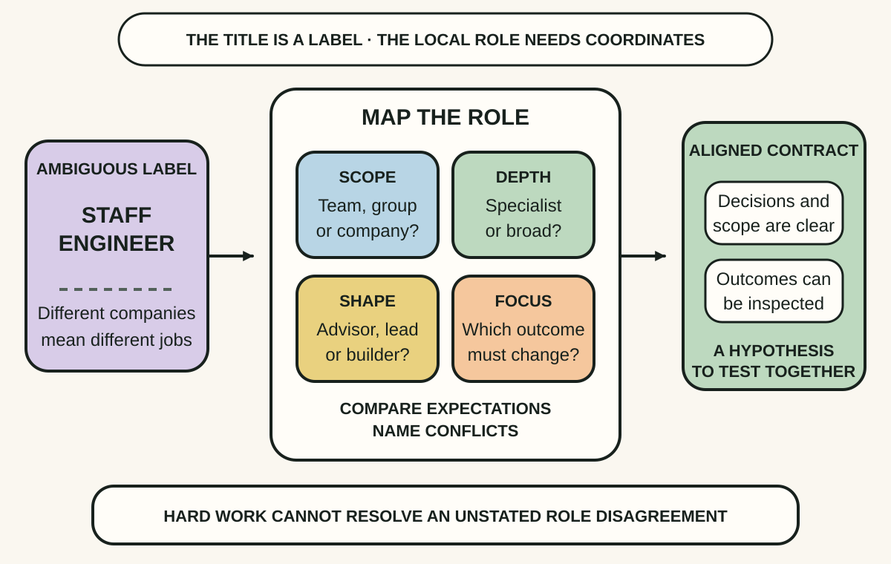
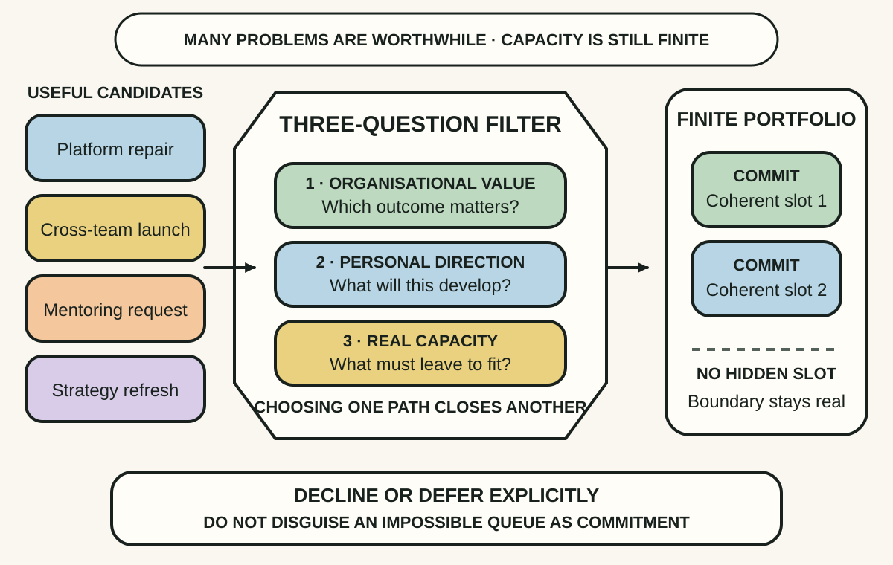
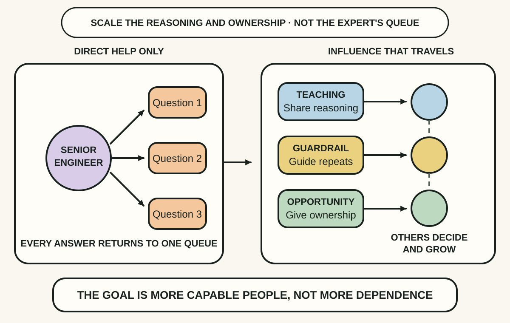

Daily lesson ·
The Staff Engineer’s Path
Grow as a senior technical leader by defining the role in its real context, choosing a finite portfolio of worthwhile work and scaling good influence without becoming the permanent bottleneck.
Idea 1
Define the role before proving yourself #
The idea
Reilly argues that staff engineering is not one standard job. Organisations use the title for different scopes, reporting relationships, depths of technical work and primary focuses. A person can therefore work hard at a plausible version of the role while their manager and peers are judging a different one.
She recommends mapping where the role sits, how broadly it reaches, what shape it takes and what it primarily exists to change. The useful outcome is not a perfect title definition. It is explicit alignment with the leaders and collaborators who depend on the role.

Why it matters
Career ambiguity creates invisible failure. Extra output cannot compensate when the organisation needs cross-team direction, and broad influence will not help if the role was hired for deep specialist work. Naming the local contract makes progress, support and trade-offs discussable.
Apply it today
Write one sentence for the role you are doing or pursuing: its scope, technical depth, primary focus and the outcome it should improve.
Ask one key collaborator which part matches their expectation and which part they would change. Record the disagreement rather than smoothing it away.
Caveat or failure mode
A role map cannot create authority, a healthy ladder or promotion capacity that the organisation does not provide. Expectations can also conflict across leaders. Use the map to surface that constraint and negotiate priorities; do not treat every gap as a personal skill deficit.
Idea 2
Choose work as a finite portfolio #
The idea
Reilly describes senior engineers as people who can see more worthwhile problems than they can possibly solve. Treating every visible flaw as a personal obligation creates an unsustainable queue and makes accidental priorities crowd out deliberate ones.
Finite time makes project choice part of the job. A candidate should matter to the organisation, fit the engineer's direction and have a realistic place among existing commitments. Choosing one path also means consciously walking past other useful work rather than quietly promising everything.

Why it matters
Overcommitment does not merely exhaust the engineer. It fragments attention, delays feedback and makes every collaborator plan around capacity that never existed. Explicit selection protects both delivery credibility and room for growth.
Apply it today
List your three largest current commitments and one tempting new request. Mark what organisational outcome and personal direction each supports.
Choose the item that does not fit the real capacity boundary. Write a clear decline, deferral or replacement decision for it.
Caveat or failure mode
Individual prioritisation cannot repair chronic understaffing, unsafe on-call demands or leaders who punish every refusal. Emergencies can also displace the portfolio. Make constraints and trade-offs visible to the people who allocate work instead of turning structural overload into private optimisation.
Idea 3
Scale influence without becoming central #
The idea
Reilly separates direct help from influence that continues without the senior engineer in every conversation. Advice can become teaching, repeated judgement can become a guardrail, and a one-off chance can become an opportunity that another engineer owns.
She also warns that seniority creates passive influence. People give extra weight to a staff engineer's unfinished ideas and copy the behaviour they observe. Scaling good influence therefore requires deliberate communication, reusable context and room for other people to exercise judgement, not simply more authority.

Why it matters
Being the person who always knows the answer can look valuable while making the organisation dependent on one queue. Reusable reasoning and distributed ownership increase capability, reduce repeated interruptions and create visible growth paths for others.
Apply it today
Choose one question or review comment you have answered at least twice. Write the decision principle behind the answer in two sentences.
Pick one scaling move: teach it to a group, add a lightweight guardrail or ask another engineer to own the next decision with your support.
Caveat or failure mode
Guardrails can harden into bureaucracy, teaching can ignore local context and delegated opportunities can become abandonment without authority or support. Keep the mechanism proportionate, review whether it improves decisions and remain available for genuinely novel cases.
Knowledge check · 6 questions
Learning check
Answer all 6, then check your answers. Your first result stays in this browser, and each explanation appears after you check. A 3-question review can appear on the homepage from tomorrow.
6 questions not yet answered.
Today's experiment · 10 minutes
Draft a staff-level role and capacity card
- Name one role you hold or want, then write its organisational scope, technical depth, primary focus and intended outcome.
- List your three largest current commitments and mark which part of that role each one supports.
- Circle the commitment with the weakest value, fit or capacity case and write decline, defer or replace beside it.
- Choose one repeated question you can scale through teaching, a guardrail or an opportunity owned by someone else.
Observable result: You finish with one inspectable role hypothesis, one explicit portfolio trade-off and one influence move that can work without routing every decision through you.
Retrieval practice
Spaced recall
- From Shape Up: how could an appetite expose whether a proposed staff-level initiative fits the time and attention it deserves?
- From Getting to Yes: which interests might sit beneath two leaders' conflicting expectations for the same technical role?
Verification
Source notes
These links support the attributed claims and edition details; applications and extensions are labelled in the lesson.
- O'Reilly: The Staff Engineer's Path edition, overview and contents
- O'Reilly: Chapter 1 on defining and aligning the staff role
- O'Reilly: Chapter 4 on finite time and project choice
- O'Reilly: Chapter 7 on passive influence and role modelling
- O'Reilly: Chapter 8 on scaling good influence
- Licensed publisher preview: introduction and three pillars
- Open Library: 2022 O'Reilly edition record
One-sentence takeaway